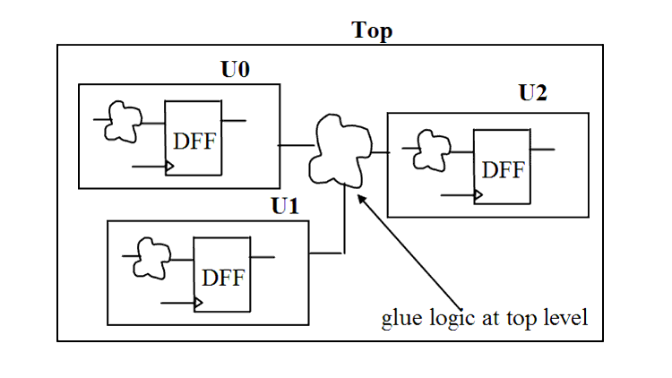

| Description | This rule fires when Leda detects any standard cells at top-level: combinatorial as well as sequential, and only hierarchical instances will be allowed. Because glue logic is not triggered by the clock or a master control signal, it is difficult to partition and synchronize such parts at the top level of the design. |
| Policy | DESIGN |
| Ruleset | STRUCTURE |
| Language | VHDL/Verilog |
| Type | Hardware |
| Severity | Error |
This is an example of invalid Verilog code, followed by a circuit diagram that illustrates the problem:
module ntl_str07_top ; ... nand I0(Dout1, Dout2, D_int); // NTL_STR07 fires -- glue logic at top level big_block1 U0(.Clock(Clock), .Reset(Reset), .Din(Din1), .Dout(Dout1)); big_block2 U1(.Clock(Clock), .Reset(Reset), .Din(Din2), .Dout(Dout2)); big_block3 U2(.Clock(Clock), .Reset(Reset), .Din(D_int), .Dout(Dout3)); ... endmodule